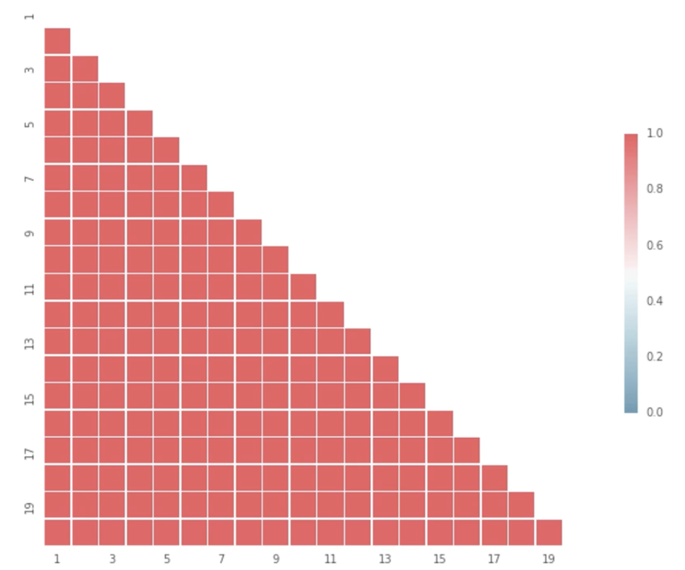

### Machine Learning Project Scoping
Observation 1: model development projects follow a well-defined performance curve.


Observation 2: model performance on a novel dataset is impossible to forecast.
In the influential 2014 paper (["Hidden Technical Debt in Machine Learning Systems"](https://papers.nips.cc/paper/5656-hidden-technical-debt-in-machine-learning-systems.pdf)) a group of Google engineers coined the CACE principle:<b>changing anything changes everything</b>.
<span style="color:lightgray">In the influential 2014 paper ("Hidden Technical Debt in Machine Learning Systems") a group of Google engineers coined the CACE principle:</span> <b>changing anything changes everything</b>. This is the source of most of the complexity in practical machine learning systems!
Some machine learning problems are intrinsically hard. <img src="static/hard-problem.png" style="width:66%;"/>
Some machine learning problems are intrinsically easy. 

Project scoping is a hard problem in software. It's even harder in ML.
### Tip 1 <p> Separate the project into <b>explorate</b> and <b>implement</b> phases. </p> <p> Use explore time to estimate project cost. </p> <br/><br/> [h/t "Doing Freelance Data Consulting in 2019"](https://www.ethanrosenthal.com/2020/01/08/freelance-ds-consulting/)
### Tip 2 Collect human and model performance benchmarks on the dataset.


### Tip 3 Negotiate performance breakpoints with stakeholders ahead of time. What is "good enough"? What is "great"? This is typically a business decision.
### Tip 4 Keep updating your time cost estimate as you proceed. Keep in contact with stakeholders and make sure they understand that performance improvements will be a non-linear.
### Tip 5 Have a library (or a zoo!) of well-optimized models you're comfortable using.
 @residentmario